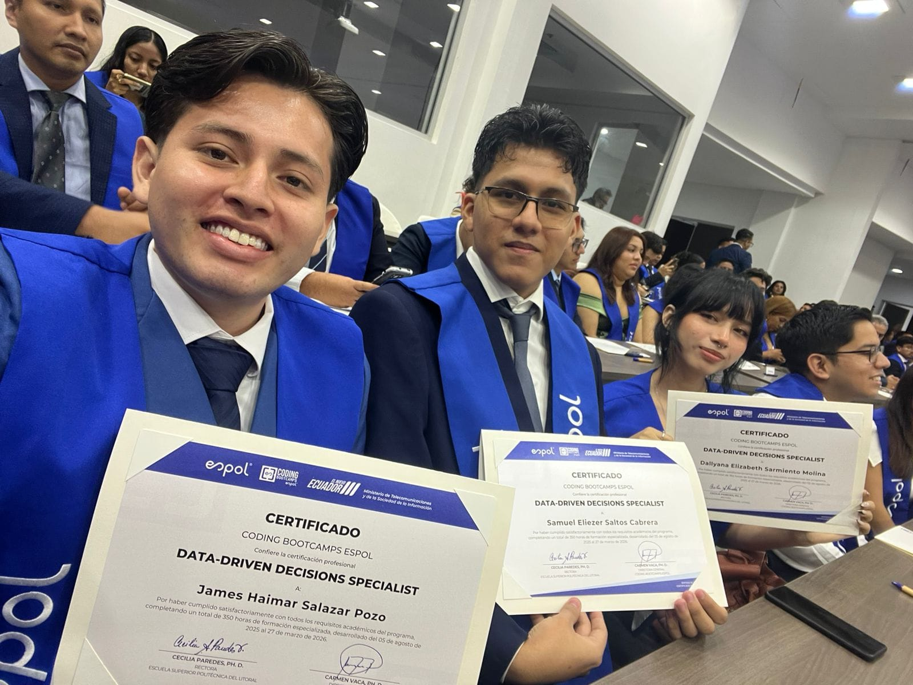

Sobre mí
Graduación del Programa Data Driven Decision Specialist - ESPOL.
Contexto
Aplique para el programa ofertado por el Ministerio de Telecomunicaciones y de la Sociedad de la Informacion, en la cual sali favorecido luego de un proceso de evaluacion la cual duro 1 mes mientras se seleccionaba a los benefiriarios de la beca por el valor $2.100, luego de 8 meses aprendiendo a procesar Datos de empresas e informacion de instituciones, logre aprobar el curso completo, al principio costo esfuerzo y empeño, pero el aprendizaje fue de alta calidad en la cual se desarrollaban proyectos para visualizar nuestro aprendizaje.
Desarrollo Cronologico
El programa se estructuró de manera progresiva a lo largo de los ocho meses. Comenzamos fortaleciendo las bases de procesamiento cuantitativo con Excel Intermedio, optimizando el manejo y la estructuración inicial de datos. Posteriormente, dimos el paso hacia la gestión de bases de datos relacionales mediante MySQL, aprendiendo a consultar, filtrar y extraer grandes volúmenes de información empresarial. A medida que avanzaba el programa, incorporamos Python para el análisis avanzado, la limpieza automatizada y la exploración profunda de datos. Tras consolidar este flujo de trabajo técnico y aplicar los conocimientos en proyectos de visualización para la toma de decisiones, el proceso culminó a finales de abril con la esperada ceremonia de graduación en la ESPOL junto a compañeros, docentes y mentores.
Aprendizaje
Esta experiencia formativa fortaleció integralmente mi perfil técnico y profesional, permitiéndome dominar el ciclo completo del análisis de datos, desde la extracción y estructuración en bases de datos relacionales hasta la automatización con Python y la toma de decisiones estratégicas, demostrándome además que con constancia, disciplina y perseverancia es posible superar retos complejos y transformar el esfuerzo continuo en resultados de alto impacto

Herramientas e insumos clave:
- Excel Intermedio / Avanzado
- Bases de datos MySQL
- Lenguaje de programación Python
- Beca MINTEL / ESPOL ($2.100)
Secuencia de aprendizaje:
- Postulación y aprobación del proceso de selección de la beca MINTEL.
- Capacitación técnica y desarrollo de proyectos reales durante 8 meses.
- Aprobación del programa y ceremonia de graduación en la ESPOL.
«Sin datos, solo eres otra persona con una opinión.»
Resumen de Módulos del Programa
| Módulo / Actividad | Tecnología / Herramienta | Duración | Estado |
|---|---|---|---|
| Procesamiento y Análisis Cuantitativo | Excel Intermedio | 1 meses | Aprobado |
| Gestión de Bases de Datos Relacionales | MySQL | 1 meses 2 semanas | Aprobado |
| Análisis Exploratorio y Automatización de Datos | Python (Pandas / NumPy) | 2 meses | Aprobado |